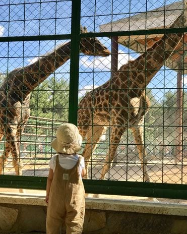

Gaziantep Hayvanat Bahçesi’nde düzenlenen rehberli okul gezilerinin en keyifli bölümlerinden biri de “Hayvanlarla Tanışma Günü” etkinliğidir. Bu özel programda öğrenciler, rehberler eşliğinde farklı türdeki hayvanların yaşam alanlarını ziyaret ederek onları yakından görme ve tanıma fırsatı bulur. Zürafalar, zebralar, maymunlar, kuşlar ve akvaryum canlıları gibi birçok tür hakkında eğlenceli ve öğretici bilgiler paylaşılır; çocuklar hayvanların beslenme alışkanlıklarını gözlemleyebilir, hatta bazı türlerin besleme gösterilerine katılarak doğrudan deneyim yaşayabilir. Etkinlik boyunca rehberler, hayvanların biyolojik özelliklerini, ekolojik önemini ve doğadaki rollerini anlaşılır bir dille aktarır. Çocuklar merak ettikleri soruları sorarak interaktif bir öğrenme sürecine katılırken, aynı zamanda hayvan sevgisi ve çevre bilinci kazanırlar. “Hayvanlarla Tanışma Günü” sayesinde öğrenciler hem eğlenir hem öğrenir, doğayla bağ kurarak unutulmaz bir deneyim yaşarlar.